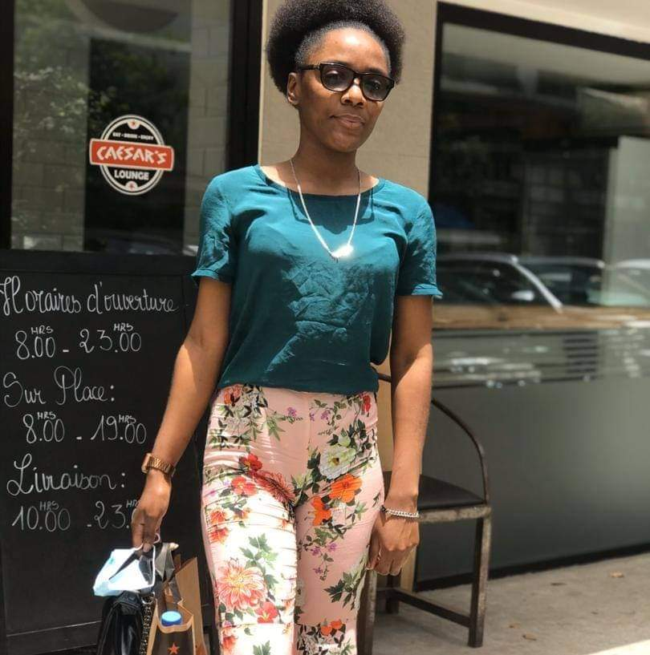

ma galerie


C'est l'histoire d'une fille, elle s'appelle Wendy une fille pas comme les autres rempli de gentillesse de compassion de bont√© d'amour. Je ne la connais que tr√®s peu, voil√† ce que je peux dire d'elle pour c'est bon et c'est mauvais c√¥t√©. Commen√ßons par ces bons c√¥t√©s, elle est naturellement tr√®s enjouleuse sa pr√©sence nous donne une sensation de bien-√™tre. Son regard, son rire, sa patience, et sa compr√©hension fais d'elle une personne exceptionnelle. En cela je peux aussi ajouter son caract√®re tr√®s charitable car du peu qu'elle a elle est pr√™te √† donner pour le bien d'un autre, ce que j'aime surtout chez elle c'est sa joie de vivre son sourire qui me laisse souvent sans voix et me donnznt toujours envie de partager ce bonheur avec elle. Elle a ses mani√®res qui font en sorte que peu importe le temps passer avec elle on s'ennuie pas. C'est une fille tr√®s d√©brouillard elle s'est pr√©par√©e, elle s'est s'occup√© des personnes qui l'entourent. Mais √ßa c'est ce que j'aime le plus chez elle. Parlons maintenant de ce qui d√©range le plus dans son comportement dans sa mani√®re de faire les choses. De se que j'ai remarqu√© et ce que je trouve le plus flagrant c'est que, lorsqu'elle est dans sa bulle elle consacre peu de temps aux choses qui l'entourent notamment prendre contact avec elle s'av√®re √™tre une chose qui perd tout son sens mais je crois que elles changera √ßa avec le temps. Et sans pour autant le savoir elle est parfois dur d'oreille, üòÇ la ponctualit√© lui fait d√©faut, si je peux d√©celer encore un d√©faut chez elle c'est son exc√®s de gentillesses j'ai vraiment pas grand chose √† dire sur ses d√©fauts car elle a plus de qualit√© que de d√©faut mais de ce que j'ai pu relever c'est juste l'essentiel. je l'aime et je l'aimerai toujours, je suis l'un des hommes les plus heureux de la terre quand je suis avec elle. Sa voie m'apaise, son sourire me remplit de joie, sa pr√©sence me comble de bonheur je veux partager ma vie avec elle lui donner le meilleur pour elle, pour sa famille pour tout ce qui la tient √† c≈ìur. Je n'ai pas de mots plus fort pour exprimer mon amour mais si tu lis ces mots ma douce sache que je suis amoureux de toi je t'aime √©norm√©ment et que je veux que tu sois √† mes c√¥t√©s pour toute la vie je t'aime i love you.